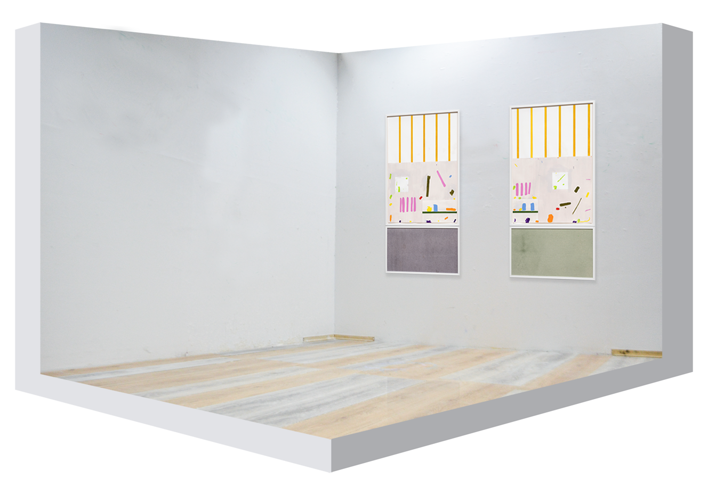
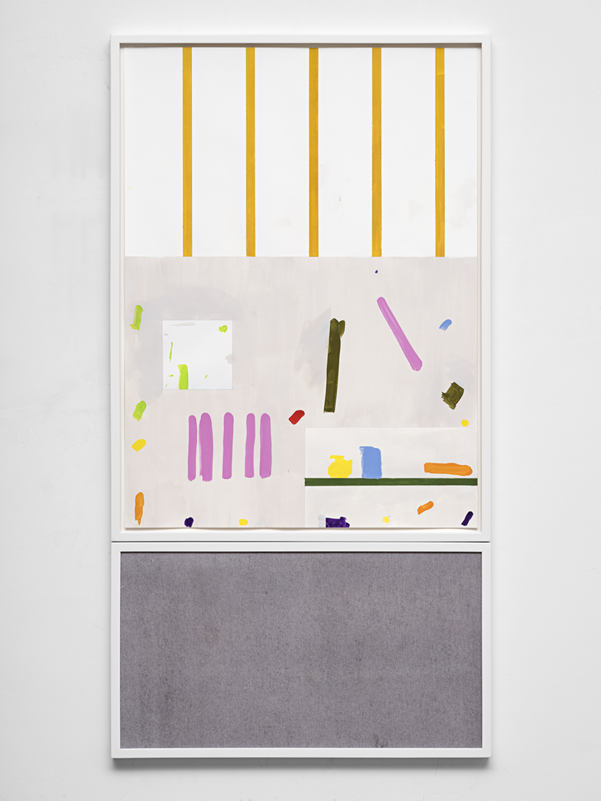
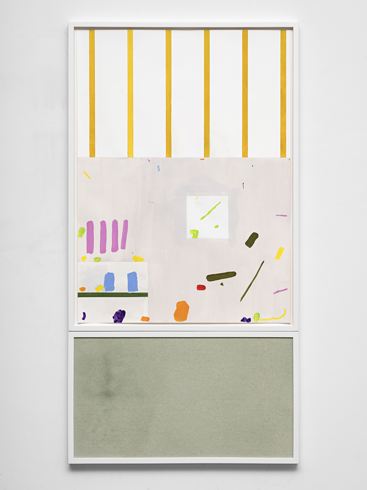

Eivind Nesterud & Fredrik Værslev
Kantarellgrenda 17
I looked at her yet again, always finding her the most intriguing of the four of us, standing there stuck between the wooden floor and the rafter, with nothing but a radiator and a book shelve. Small splashes of old paint evenly distributed all over, you can see the attempts, failures, forgotten ideas, and ideas in waiting to come. Her ever changing appearance, different paintings, different colors. A while ago parts of her were covered in postcards and scraps of paper, with tools, books, different kinds of furniture in front of her, but I like her best the way she is now, neat with a few sketches and some oil tubes laying at her feet.
I’m not her only admirer, each day the sun puts it sight on her. At first it looks at all four of us, but after a while the three of us are cast in shadow, and the sun is still glimpsing at her shining its affection, but who can blame it, she sparkles even more in the light.
Maybe my window will be opened later, and then the birds can sing a song from me to her.
The exhibition “Kantarellgrenda 17” is a collaboration between Eivind Nesterud and Fredrik Værslev.
-Thomas Bremerstent
Eivind Nesterud (b. 1978, Oslo), lives in Oslo and works in Sandvika.
The Oslo School of Architecture and Design 2009-2015
Malmö Art Academy 2000-2005
Fredrik Værslev (b. 1979, Drøbak) lives and works in Dikemark and Vestfossen.
Malmö Art Academy 2005-2010
Städelschule in Frankfurt am Main. 2008-2009


Kantarellgrenda 17 #1
2020
104 x 56 cm
Goauche and pencil on paper and primer with pigment on canvas.

Kantarellgrenda 17 #2
2020
104 x 56 cm
Goauche and pencil on paper and primer with pigment on canvas.